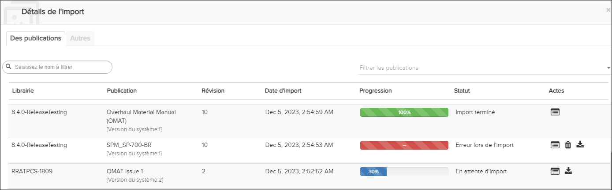
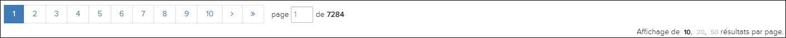
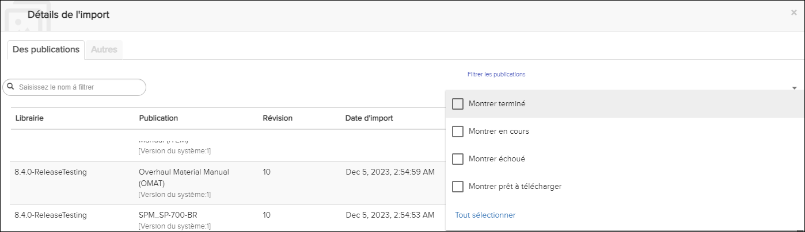
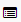
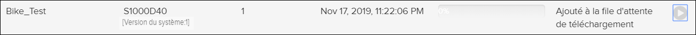

Non applicable pour Pinpoint Standalone Light.
Remarque : Cette procédure suppose que vous avez reçu des droits de lecture ou d'écriture
pour l'affichage des statuts de publication d'importation dans ACM. Si vous n'avez
pas de privilèges, le bouton Détails de l'import
n'apparaît pas.
Les utilisateurs disposant des autorisations appropriées peuvent afficher et cliquer
sur le bouton
Détails de l'import
pour afficher une liste de toutes les publications
(données importées dans l'ordre décroissant). Les révisions que vous supprimez dans
le Data Manager s'affichent dans la liste avec le statut pour la
suppression.
Remarque : Vous pouvez sélectionner une option dans le menu déroulant des
Filtrer les publications pour limiter le nombre de
publications consultées.
Chaque enregistrement affiche cette information:
- Librairie
- Publication (inclut le numéro de version du système)
- Révision
- Date d'import
- Progression
- Statut
- Actes
Remarque : Le statut des packages Pinpoint Neutral importés est également affiché.
Le statut de téléchargement de ces packages est disponible uniquement pour cette
page. Si vous actualisez la page ou que vous vous déconnectez, le statut de
téléchargement actuel n'est plus disponible. Le statut des paquets Pinpoint
Neutral qui ont été téléchargés avec succès est affiché à tout
moment.
Si vous définissez l'option Télécharger les dernières
révisions du volet Configuration sur
Manuellement, la publication L'icône Aperçu de l'importation indique
le nombre de publications disponibles au téléchargement. Ces publications
apparaissent dans la boîte de dialogue Détails de l'import en
tant que Prêt à télécharger. Vous pouvez contrôler le processus de téléchargement du
publications en mettant en pause, en reprenant et en arrêtant le téléchargement.
L'emplacement et le comportement de l'icône Présentation de l'importation de la
publication lors de
l'importation dépendent de la largeur de la page et du fait qu'une
importation ait lieu ou non:
- Si la largeur de la page est inférieure ou égale à 1280 pixels, l’icône
Présentation de l’importation de la publication
apparaît dans la liste déroulante
 Autres actions. L'icône
Autres actions et l'icône Aperçu de
l'importation de la publication clignotent pendant
l'importation. Une fois que l'importation est terminée, les icônes cessent
de clignoter.
Autres actions. L'icône
Autres actions et l'icône Aperçu de
l'importation de la publication clignotent pendant
l'importation. Une fois que l'importation est terminée, les icônes cessent
de clignoter.
- Si la largeur de la page est> 1280px, seule la vue d'ensemble de
l'importation de la publication clignote pendant
l'importation. Une fois l'importation terminée, l'icône cesse de
clignoter.
Pour afficher les statuts de publication d'importation, procédez comme suit:
-
Cliquez sur l'icône Détails de l'import
dans la Barre d'action.
La boite de dialogue
Détails de l'import
apparaît.

Remarque : La liste des révisions de
publication est actualisée automatiquement toutes les minutes.
Si
plus de 10 documents sont retournés, la liste sera paginée. Vous pouvez
naviguer entre les pages à l’aide des touches numériques situées au-dessus
et au-dessous de la liste des résultats. Vous pouvez également taper le
numéro de la page directement dans le champ Page. Vous pouvez également
sélectionner le nombre de résultats à afficher par page:
10 (par défaut), 20 ou
50.

-
Cliquez sur la flèche vers le bas Filtrer les
publications pour sélectionner le type de publications que vous
souhaitez afficher.

Par défaut, toutes les publications sont affichées. Ces options de filtrage
sont disponibles:
- Montrer terminé
Sélectionnez cette option pour afficher uniquement les
dernières révisions de chaque publication.
- Montrer en cours
Sélectionnez cette option pour afficher uniquement
les révisions de publication avec des actions (autres que
l'affichage des journaux).
- Montrer échoué
Sélectionnez cette option pour afficher uniquement les
révisions de publication ayant échoué.
- Montrer prêt à télécharger
Sélectionnez cette option pour afficher
uniquement les révisions de publication prêtes à être
téléchargées.
- Tout sélectionner / Tout effacer
Cliquez sur Sélectionner
tout pour sélectionner toutes les options de
filtrage. Cliquez sur Effacer tout pour
désélectionner tous les filtres.
Remarque : Vous pouvez également saisir du texte à rechercher dans le champ Nom
du filtre à filtrer.
-
Voir la liste des publications importées.
Les publications en cours d'importation affichent le pourcentage complété
dans le champ Progression. Si une importation échoue,
les tirets (-) sont affichés dans ce champ.
Le statut de l'importation s'affiche dans le champ
Statut.
-
Facultatif. Cliquez sur l'icône Afficher le journal

pour la publication.
Les journaux d'importation de la publication sélectionnée
apparaissent.
-
Cliquez sur l'icône
 Redémarrer l'importation pour redémarrer une importation
ayant échoué.
Redémarrer l'importation pour redémarrer une importation
ayant échoué.
-
Cliquez sur l'icône
 Rétrograder pour annuler une publication à partir du
Gestionnaire de données.
Rétrograder pour annuler une publication à partir du
Gestionnaire de données.
Vous pouvez supprimer toutes les publications (autres que celles complétées
avec succès). Si vous supprimez une révision de publication, cela va
redémarrer le processus d'importation de publication. Vous pouvez afficher
les journaux de processus de suppression en cliquant sur l'icône afficher le Journal pour la publication.
Remarque : Flatirons Solutions vous conseille de ne pas annuler les publications
importées sans problème. Cela pourrait entraîner une corruption des
données.
-
Cliquez sur l'icône
Démarrer / Reprendre le téléchargement pour démarrer un
téléchargement ou reprendre un téléchargement en pause.
Lorsque vous sélectionnez l'option Démarrer le téléchargement, la
publication est ajoutée à la file d'attente de téléchargement, par
exemple:

-
Cliquez sur l'icône de téléchargement de pause
pour suspendre un téléchargement.
Lorsque vous sélectionnez cette option pour suspendre le téléchargement,
aucune action supplémentaire ne peut être entreprise sur le téléchargement tant
que le processus de pause n'est pas terminé. Une fois ce processus terminé, vous
pouvez sélectionner l'icône Reprendre le téléchargement pour
reprendre le téléchargement.
-
Cliquez sur l'icône
 Arrêter le téléchargement
pour arrêter un téléchargement.
Arrêter le téléchargement
pour arrêter un téléchargement.
-
Sélectionnez l'onglet Autres pour afficher le statut des
annotations synchronisées.
Remarque : Cet onglet ne s'affiche que si l'utilisateur connecté dispose
d'autorisations de lecture / écriture pour la modification à distance de
privilège de détails du serveur dans ACM. Les informations affichées dans
cet onglet sont en lecture seule.